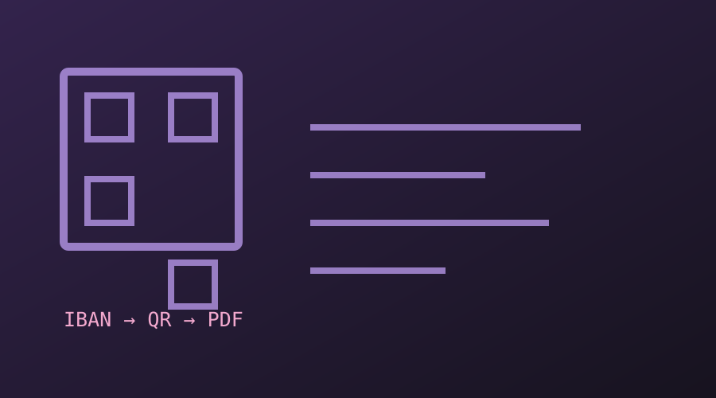
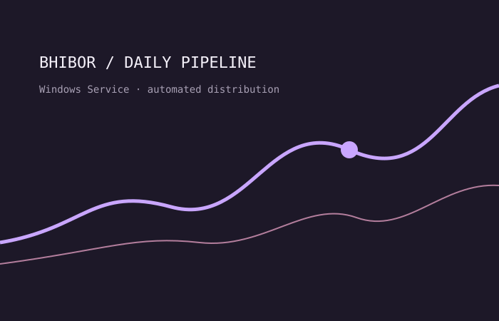
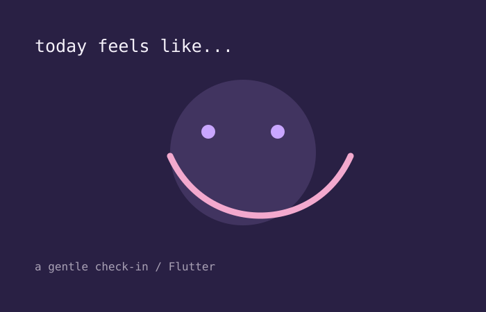
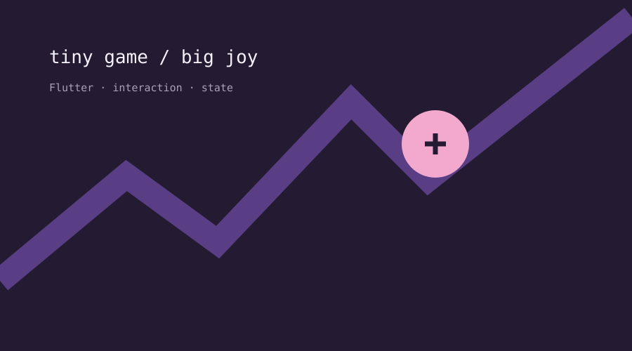

01An internal desktop tool that generates Bahraini IBANs and QR codes, then creates PDF reports and handles email delivery.
available for new opportunities · Bahrain
I’m Eman — a software developer and Business Informatics graduate who likes turning messy workflows into clear, reliable digital experiences.
01 / selected work
From banking automation to small Flutter experiments — I learn by making.

01An internal desktop tool that generates Bahraini IBANs and QR codes, then creates PDF reports and handles email delivery.

02A Windows Service that collects and distributes daily interbank rates consistently, replacing repetitive manual reporting.

03A small mobile space for logging feelings and noticing patterns — built to make self-reflection feel simple.

04A playful Flutter build exploring interactions, state, and the joy of making a tiny game loop work.
02 / a little context
I’m a Business Informatics graduate from the University of Technology Bahrain. I enjoy sitting at the intersection of technology, people, and the systems that connect them.
During my time at Ithmaar Bank, I worked on real internal tools — from a C# application for Bahraini IBANs and QR codes to a BHIBOR Windows Service. That experience taught me to care about the unglamorous details: clear documentation, dependable automation, and making a workflow easier for the person using it.
When I’m not building, I’m usually learning something new, sketching an interface, or finding a better way to explain a complicated thing.
Read my full CV ↓03 / toolbox
certifications & courses
04 / your turn
I’d love to hear what you’re working on. Drop me a line and let’s see where a good conversation goes.
Say hello ↗